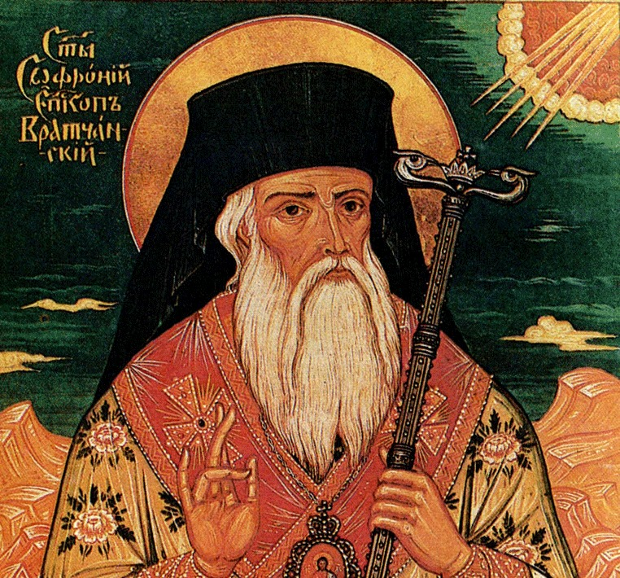
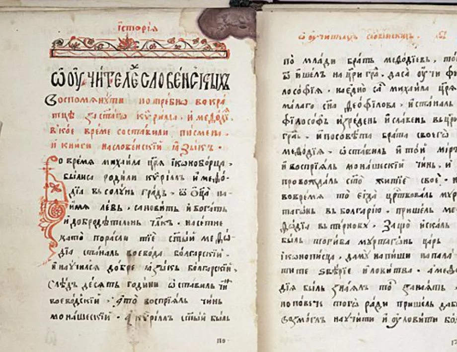

Бележит възрожденски писател, общественик, просветител, родоначалник на новобългарската литература и строител на новобългарския книжовен език. Той е и човекът направил първия препис на знаменитата „История славянобългарска“.
Софроний Врачански е роден през 1739 година в Котел в семейството на заможен търговец на добитък със светското име Стойко Владиславов. Учи в килийно училище в родния си град по старобългарски и гръцки черковни книги. Работи като абаджия, но се забелязва стремежът му към духовни занимания. През 1762 година е ръкоположен за свещеник, работи и като учител и книжовник в Котел.
През 1792 година напуска Котел, служи в енорията в Карнобат. Пътува до Цариград, Света гора, Анхиало, Арбанаси и през 1794 година става монах в Къпиновския манастир, а на 17 септември същата година е ръкоположен за епископ на Враца под името Софроний.

Голямо влияние върху дейността му оказва срещата му с Паисий Хилендарски през 1765 година в Котел. Отец Паисий му показва „История славянобългарска“, от която той прави препис, известен днес като Първи Софрониев препис. Самият Стойко Владиславов пътува до Света гора през 1770 – 1775 година.
